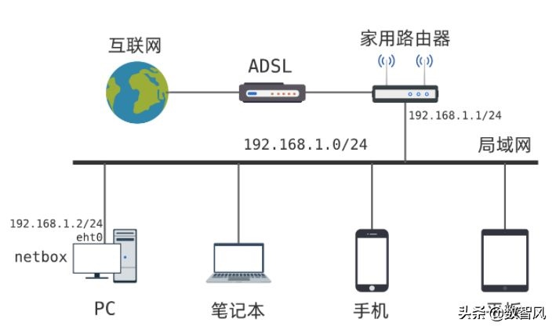
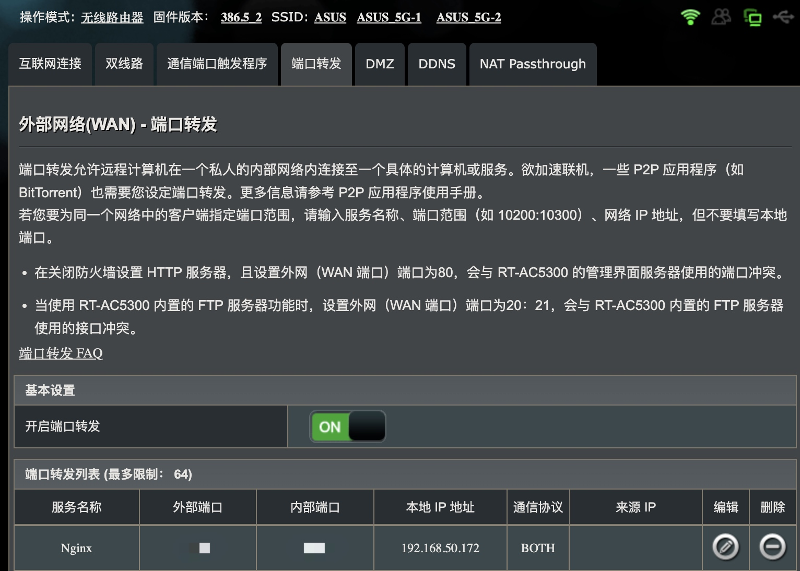
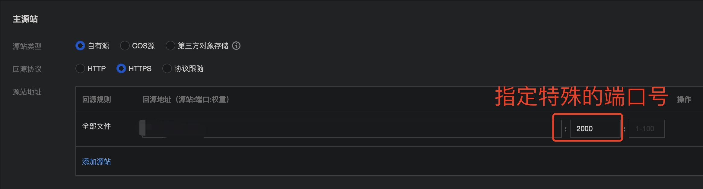

如何把家里宽带配置为云服务器
家里的宽带网速这么快，能否作为云服务器供外网访问呢？
作为技术人员，一个趁手的云服务器算是刚需，可以将个人博客架设到上面，也可以作为 API Server 为终端提供云服务，也可以作为数据备份仓库。
不过一般来讲性能稍微好一点的云服务器费用都不低，而且忘记续费还会被回收。而目前家里的宽带一般都是几百兆甚至是千兆宽带，不管是下载还是上传速度都非常快，同等的云服务器的价格已经要起飞了。
那么很自然就有一个想法：家里的宽带这么快，能作为云服务器使用吗？
答案是可以的，下面做一下介绍。
大陆原则上是不允许私自架设服务器的，本文仅供学习交流。
首先我们要理解一点，云服务器本质上就是一台实体的电脑而已（当然也可以通过虚拟技术将多个服务器架设到同一台设备上），只是这台电脑在各大服务商的机房里，24 小时开机，没有显示屏。
我们家里用电脑连接到 WiFi 上，其实也可以作为一台服务器，唯一要做的就是要让外网能够访问你家宽带，并最终访问到你的电脑上。
公网 IP
最最重要的是你要有个公网 IP。为了缓解 IPv4 紧缺的问题（当然还有其他你懂的因素），家里的宽带默认的 IP 都是局域网 IP，不信你可以访问 https://tool.lu/ip/ 看一下你的出口 IP，大概率和你光猫的 IP 不一样。

如果是局域网 IP 的话，别人根本访问不到你家的光猫设备，就更别提其他的了。
好在目前不同地区的要求不同，可以打电话给你的宽带运营商，比如电信，然后找人工客服要求更换成公网 IP，如果被问理由，就说是有在公司访问家里文档资料的需求就行了，别提架设网站的事情。
运营商同意后，一般会有你所在片区的师傅帮你调成公网 IP，调完之后重启一下光猫就可以了。然后查看光猫的 IP 有没有变过来。
中央路由器与端口转发
有了公网 IP，最核心的问题已经解决了，剩下的就是当用户访问这个公网 IP 时我们应该如何将请求转发到你的电脑上，并处理数据返回给用户端。
一般要用到端口转发的能力，比如外部访问你的 IP 的 80 端口，你需要将这个请求转发到家庭局域网中的某个电脑上，然后由电脑响应请求并返回内容。
一个比较好的办法是搞一台支持梅林等系统的路由器，比如我用的是华硕 RT-AC5300，将光猫的模式改为桥接，由路由器负责内网的搭建和管理。同时建议关掉光猫的 WiFi，很鸡肋。

DDNS
一般来讲，从运营商申请到的公网 IP 都是临时的，过一段时间就会自动变，我们需要通过 DDNS(Dynamic Domain Name Server) 动态域名服务做动态域名解析。
我是直接用的华硕路由器提供个的 DDNS 服务，免费。
为了方便理解，我这里假设 DDNS 的域名为 https://ddns.asus.com。
到这一步，当用户访问 https://ddns.asus.com 其实已经可以访问到你的中央路由器的 443 端口了。
80 与 443 端口
80 和 443 端口分别是 HTTP 和 HTTPS 的默认端口，很不幸，这两个端口都被屏蔽了。因为大陆不允许将私人宽带作为服务器使用，特别是建站操作，明令禁止。
那怎么办呢，我们总不能每次访问都加上端口号吧，这也太麻烦了，也没这么搞的。
好在有一些方案可以绕过。比如可以利用 CDN 回源时可以指定端口号的特性，我们访问 CDN 域名的 443 端口，然后 CDN 回源时配置访问服务器的特殊端口号。这样就可以做到用户正常访问，无需添加端口号的目的。

先写这些吧，毕竟我是一个遵纪守法的好公民。
转载请注明出处：如何把家里宽带配置为云服务器 - 专业点
欢迎关注我的公众号

推荐

公众号推荐
欢迎关注我的公众号一起愉快的交流。